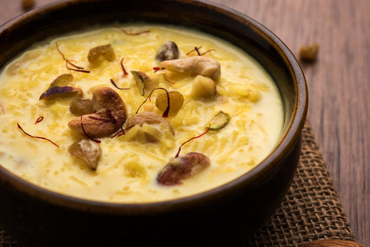

Kheer
Kheer is an Indian sweet made with cereals, lentils or their flours. The Indian cuisine has many variations of kheer recipes. Kheer is like a pudding traditionally made with milk, sugar and some dry fruits. The choice of spices and flavorings are usually cardamom, rose water, kewra water or saffron. So you must be wondering what is rice kheer?
Rice kheer is basically Indian version of rice pudding made with basmati rice, whole milk, sugar, nuts and spices. It is also one of the most popular kheer variant made in North Indian cuisine together with Seviyan Kheer (Vermicelli Pudding) and Phirni (thick rice pudding).

Ingredients
- ¼ cup basmati rice
- 1 litre whole milk - 4 cups
- 6 tablespoons sugar or add as required
- ½ teaspoon cardamom powder or 5 to 6 green cardamoms powdered in mortar-pestle(choti elaichi powder)
- 1 pinch saffron strands or 14 to 16 saffron strands
- 1 tablespoon chopped or sliced almonds or blanched almonds
- 1 tablespoon chopped or sliced cashews
- 1 tablespoon chopped or sliced unsalted pistachios
- 1 tablespoon golden raisins
Instructions
Preparation
- ¼ cup basmati rice a couple of times till the water runs clear of the starch.
- Then soak the rice in enough water for 15 to 20 mins.
- Blanching almonds - heat water in a small pan or pot. When the water comes to a boil then switch off the flame and then add 10 to 12 almonds to it. Cover and keep aside for 30 minutes. Then peel and slice almonds. This is an optional step.
Cooking rice
- Meanwhile, when the rice grains are soaking, take whole or full fat milk in a heavy wide pan or saucepan or kadai.
- Keep the pan on a low to medium-low heat. Stir at intervals so that the milk does not stick at the bottom of the pan.
- Let the milk come to a boil.
- Take 1 tablespoon milk from the pan in a small bowl. Let the milk become warm. Then add a few saffron strands in the milk. Keep aside.
- After the milk begins to boil, drain all the water from the rice and add it to the hot boiling milk. mix very well.
- Simmer and cook rice on a low heat. No need to cover the pan when the rice is cooking.
- Cook the rice grains till they are 50% done or half-cooked.
- Then add sugar. You can add more or less sugar according to your preferences. Mix the sugar in the milk with a spoon.
- Continue to cook rice on a low to medium-low heat. Do stir at intervals. Simmer till the rice is almost cooked.
Flavoring the rice kheer
- Then add ½ teaspoon cardamom powder. Add blanched and peeled sliced almonds and chopped cashews and sliced pistachios. Mix well.
- Then add the saffron infused milk.
- Again mix and continue to cook on a low flame till the rice kheer thickens and the rice grains have completely cooked.
- Switch off the heat when the rice grains are completely cooked. The kheer will also thicken. On cooling rice kheer thickens more. Scrape milk solids from sides and add to kheer.
- Lastly add 1 tablespoon golden raisins. At this step you can add 1 tablespoons rose water or kewra water to the kheer.
- Pour the kheer in individual serving bowls. You can serve the rice kheer, hot or warm or chilled. Refrigerate leftover rice kheer in a closed container and eat it in 1 to 2 says.
- You can enjoy it cold or warm it before serving. If the kheer has become very thick then add a splash of milk and reheat it until warm.